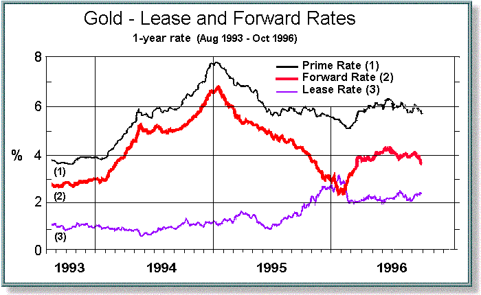

|
Now that we have seen how spot gold is priced "loco London," we can examine how other local markets, and other types of gold contracts, are priced in reference to the London spot market. This includes other spot delivery locations, gold forward and futures contracts--such as the gold futures contract at the NYMEX in New York-- and gold swaps, forward rate agreements, and options. (In 1994 the COMEX merged with the NYMEX, and the principal gold futures contract now trades there.) London is only one of many important centers for gold trading. The second principal center for spot or physical gold trading, for example, is Zurich. For eight hours a day, trading occurs simultaneously in London and Zurich--with Zurich normally opening, and closing, an hour earlier than London. During these hours Zurich closely rivals London in its influence over the spot price, because of the importance of the three major Swiss banks--Credit Suisse, Swiss Bank Corporation, and Union Bank of Switzerland--in the physical gold market. Each of these banks has long maintained its own refinery, often taking physical delivery of gold and processing it for other regional markets. (On December 8, 1997, Swiss Bank Corporation and Union Bank of Switzerland announced plans to merge, the combined bank to be known as United Bank of Switzerland. The net effect such a merger would ultimately have on the Zurich gold market is not yet clear.) In addition to other gold delivery locations, there are other weight and quality standards which create differential prices. Examples include the London and Tokyo kilobars (which are 32.148 ozs., instead of the circa 400 oz. "large bars"), the 10 tola bars (3.75 ozs.) popular in India and the Middle East, the 1, 5 and 10 tael bars (respectively 1.203, 6.017, and 12.034 ozs.) found in Hong Kong and Taiwan, and the baht bar (0.47 ozs) of Thailand. Gold content is another difference. The London good delivery bar is only required to have a minimum of 995 parts gold to 1000 parts total. But a gold content of 9,999 parts gold to 10,000 parts total ("four nines") is commonly traded, as is a content of 990 parts to 1,000 total (the baht bar being an example of the latter ratio). Gold purity is important to industry. Jewellers might want gold in the form of grain for alloying, while electronics firms may require "five nines"--meaning .99999 purity. Pricing Nonstandard ContractsNonstandard contracts can be priced by reference to the standard loco London good delivery bar, by taking into account the simple arbitrage relationships that would turn one into another. The primary variables to keep track of are the costs of shipping gold from one location to another, the cost of refining gold to different purity levels, and the interest or financing cost for the time required to accomplish these activities. Suppose a dealer is offered non-good delivery bars of .995 purity loco Panama City. Here is one chain of calculations the dealer might go through to come up with a price quotation. First the dealer notes that London good delivery bars of .9999 purity can be sold in Tokyo for $.50/oz premium to the standard loco London price. He knows that if he buys the bars in Panama, he could sell them in Tokyo, but first he would have to ship them to an appropriate location to upgrade their purity. The dealer also knows that he can upgrade to London large bars for good delivery, and have the gold content refined to .9999 purity, for $.50/oz at the Johnson Matthey refinery in Salt Lake City, Utah. There is a two-week turnaround time for the upgrade. Shipping time is one day from Panama City to Salt Lake, and two days from Salt Lake to Tokyo. The dealer calculates the cost of shipping and insurance from Panama to Salt Lake as $.40/oz, while shipping from Salt Lake to Tokyo is $.70/oz. The total time consumed would be 15 days, which at 6 percent interest and spot gold at, say, $300/oz amounts to 300 x .06 (15/360) = $.75/oz. So the dealer adds up: shipping costs $1.10, plus interest cost $.75, plus refining cost $.50, minus selling premium in Tokyo of $.50. The net cost to the dealer to sell the Panama bars in Tokyo is $1.85/oz. Therefore the dealer's best, or break-even, quotation to the person offering him non-standard gold bars in Panama City would be the spot price for good delivery loco London minus $1.85. If spot gold were at $300/oz. bid, the most the dealer could afford to bid for the Panama bars would be $298.15/oz. The Gold Lease or Gold Libor RatesGold bears interest. Positive interest. Many people do not know this. They are used to the notion of storing their gold with some bank or warehouse, and paying for storage cost. They then view the storage and insurance cost as a negative interest rate. But this has little to do with the way gold is priced or traded in the wholesale market. The forward price of gold--the price agreed now for gold to be purchased or sold at some time in the future--is a function of the gold spot price, and the interest rates representing alternative uses of resources over the forward time period. So before we discuss gold forward prices, we should discuss gold and dollar interest rates. This brings us to the gold lease rate, or the gold interest rate paid on gold deposits. Another term that is used is gold libor, by analogy with the London Interbank Offered Rate for eurocurrencies traded in London. Despite the apparent literal connotation of each of these labels, "gold libor rates" and "gold lease rates" are alternative descriptions that refer to the bid-asked gold interest rates paid on gold. The bid rate (deposit rate, borrowing rate) is the gold interest rate paid for borrowing gold (that is, on gold deposits), while the asked or offered rate is the gold interest rate quoted for lending gold. The expressions "bid-asked gold lease rates" or "bid-asked gold libor rates" are thus interchangeable. If the gold borrowing rate is 2 percent per annum, for example, then 100 ozs of gold borrowed for 360 days must be repaid as 102 ozs of gold. (Gold interest rates, like most money market rates, are nearly always quoted on the basis of a 360-day year.) In the early 1980s gold deposits rarely yielded over 1 percent, but in recent years have rarely yielded less than 1 percent. The chart below, from Kitco, shows gold lease rates from August 1993 to October 1996. (More recent daily quotes can be found at the Kitco web site.) |

|
Because of large central bank gold holdings, gold loans are one of the cheapest financing sources for the gold mining industry. A mining company borrows gold and sells it on the spot market to obtain funds for gold production. The interest installments on the gold loan are payable in gold. And when the loan matures, the principal (and any final interest due) is repaid directly from mine production. Central banks are the major lenders of gold. They accounted for around 75 percent of the gold on loan, estimated at around 2,750 tonnes, at the end of 1996. Central banks in recent years have been under pressure to earn a return on their gold holdings, and therefore lend to, for example, gold dealers who have mismatched books between gold deposits and gold loans. (The practice of central bank gold lending first became newsworthy in 1990, when the investment banking firm Drexel, Burnham, Lambert went bankrupt while owing borrowed gold to the Central Bank of Portugal.) The gold lending (or borrowing) rate, then, is one of the components that determine the gold forward price. Let's see how this works. The Gold Forward PriceSuppose the spot price of gold is $300/oz. The gold lease rate for 180 days is 2 percent per annum. And the eurodollar rate for 180 days is 6 percent per annum. (For simplicity here, we ignore all bid-asked spreads. But they are easily included in the following calculations.) I borrow $300 at the eurodollar rate. In 180 days I will have to repay the dollar borrowing with interest in the amount $300 (1+.06(180/360)) = $300 (1.03) = $309. With the borrowed money I can buy 1 oz. of gold, and place it on deposit for 180 days. The amount of gold I will get back is 1 (1+.02(180/360) = 1 (1.01) = 1.01 oz. Thus, 1 oz. of gold with a spot price of $300 has grown into 1.01 ounces in 180 days, with a value of $309. This translates into a 180-day forward value of $309/1.01 = $305.94.
Notice that both the gold lease and the eurodollar rate have gone into this calculation. Specifically: $305.94 = $300 [1+.06 (180/360)] / [1+.02 (180/360)]. In general, if the spot price is S, the forward price is F(T) for a time-horizon of T days (up to a year), the eurodollar rate is r, and the gold lease rate is r*, we have the relation F(T) = S [1 + r (T/360)] / [1 + r* (T/360)]. Notice that in the numerical example we just used, the forward price $305.94 is approximately 2 percent higher than the spot price of $300. That is, the 180- day forward premium of $5.94 is approximate 2 percent of the spot price of $300. (An exact 2 percent would be $6.) Why is this? To see what is involved, let's subtract the spot rate S from both sides of the above equation. The left- hand side will be the forward premium F(T) - S. Simplifying the right-hand side, we obtain: F(T) - S = S [( r - r*)( T/360)] / [1 + r* (T/360)]. That is, the forward premium (F(T)-S) is approximately equal to the spot rate S multiplied by the difference between the eurdollar rate r and the gold lease rate r* (once we have adjusted this rate for the fraction of a year: T/360). Since in the numerical example the eurodollar rate was 6 percent, while the least rate was 2 percent, the forward premium at an annual rate is approximately 6-2 = 4 percent. For 180 days, or half a year, it is approximately 2 percent. So, as long as we are talking about an annual rate- -that is, before we do the days adjustment--the gold forward premium in percentage terms is approximately the difference between the eurodollar rate and the gold lease rate. We can view this same relationship in other ways: given a eurodollar rate and a gold forward premium (in percentage terms), we can back out the implied lease rate. Looking back at the chart from Kitco, above, it is easy to see that subtracting the gold lease rate from the "prime rate" gives us approximately the gold forward rate. (Note that "prime rate" is a misleading term to use: the relevant interest rate in the gold market is the eurodollar rate by which banks borrow and lend among themselves, not the commercial "prime" lending rate--which is often an administered, rather than a market, interest rate.) Gold forward rates are sometimes referred to as "GOFO" rates, because GOFO was the Reuters page that showed gold forward rates. Gold SwapsThere are many different hedging and trading operations in the gold market, all of which bring us back to the same relationship between forward and spot rates we saw in the previous section. For example, gold dealers will buy gold forward from mining companies. The mining companies, thus assured of a fixed forward price at which to sell their production, go to work producing. Meanwhile, the gold dealers, to hedge themselves against movements in the gold price, borrow gold and sell it in the spot market. (To repeat, dealers "borrow" gold by taking in gold deposits, and paying out the gold lease rate.) Restated, gold dealers buy gold forward from mining companies at a price F(T). To hedge themselves, the dealers borrow gold at an interest rate r*, and sell it in the market at a price S. They earn interest on the dollar proceeds of the spot gold sale at an interest rate r. Thus, for each ounce of gold purchased, the dealer must pay F(T) [1+ r* (T/360) ] . While for each ounce of gold sold, the dealer earns: S [1 + r (T/360)]. All excess profit (beyond bid-asked spread) gets eliminated when these amounts are equal. Which gives F(T) [1+ r* (T/360) ] = S [1 + r (T/360)] . This is, of course, exactly the same formula as before. Generally speaking, gold dealers will quote forward prices to their customers (these are called "outright" forwards), but forward trades beween dealers mostly take place in connection with a simultaneous spot transaction. That is, in the form of "swaps." A swap transaction is a spot sale of gold combined with a forward repurchase, or a spot purchase of gold combined with a forward sale. This type of trading requires less capital and is subject to less price risk. The swap rate is F(T)-S, and as we saw before, this difference is (when quoted as a percentage of the spot price) essentially the difference between the eurodollar rate and the gold lease rate. A spot sale of gold combined with a forward purchase is also called a cash-and-carry transaction. The transaction provides immediate cash, the cost of which is the carry, or the difference between forward and spot rates. The dollar lender (who buys the gold), meanwhile has possession of the gold as security. So a cash-and-carry (one form of a swap) boils down to a dollar loan collateralized with gold. The typical dealing spread between eurodollar deposits is 1/8 of 1 percent, or .125 percent, while the typical spread between gold deposit and loan rates is .20 percent. This translates into bid-asked swap rate, or cash-and-carry, spreads of about .30 percent. For example:
Note that the gold swap rate can be independently viewed as the collateralized borrowing rate. A small central bank, for example, with plenty of gold to spare, could borrow dollars for 3 months and pay--not the 3-month asked eurodollar rate of 3.25 percent--but rather the gold swap rate of 2.70 percent. |